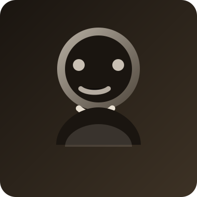

Why this exists
Neuralis Archivum is a personal exploration of how the brain maps to the stories we tell ourselves. This space was created to encourage anyone who visits to spend a moment of reflection on the complexity of our biology.
My goal is to bridge the gap between intricate neuroscience and minimalist design-exploring the six pillars of the human brain, one region at a time.
Return to the ArchiveAbout Me

Hi! I'm Hsu Shwe Yee Htet
I’m a lifelong learner who loves the crossroads between neuroscience, design, and coding. I created this simple project to test myself on building a simple static site with my passionate interest in brain science.